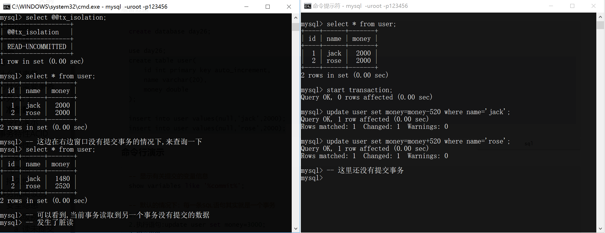
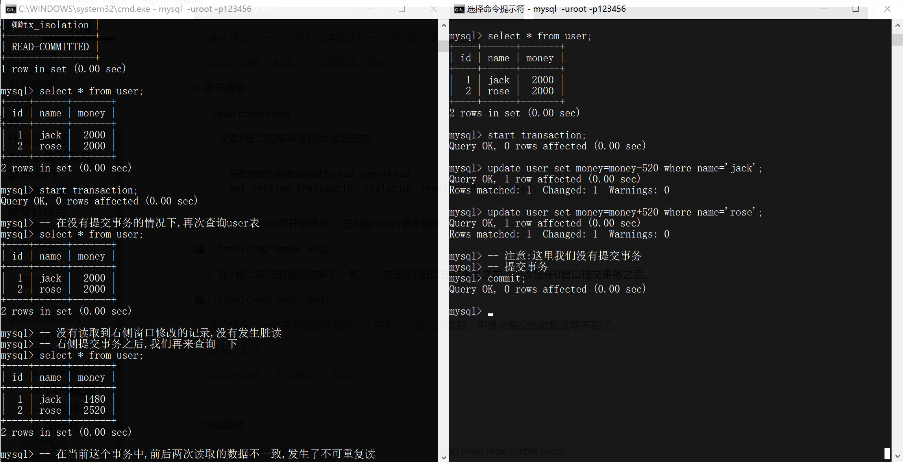

事务¶
什么是事务¶
事务,就是要完成的某件事情,例如网上购物,转账,做饭,洗澡等等!
要完成某件事情我们通常都需要若干个步骤, 若其中某个步骤失败啦! 那这个事情就尴尬啦!
例如,下面这个洗澡的情景!
为什么需要事务¶
在我们日常的开发过程中,我们想要完成某个功能时,可能需要执行很多条SQL语句, 如果这些SQL执行到一半,突然停电啦. 那么就会导致这个功能只完成啦一半,这种情况能允许它出现吗 ?
例如: 我们以张三给王五 银行转账500块钱为例
- 从 张三 的余额中 减去500块钱
- 向 王五 的余额中 增加500块钱
这里面看起来就是两条很简单的sql语句呀!
1 2 | |
如果按照正常流程,那么这里面就没有问题!
倘若第一条语句执行成功之后,系统突然奔溃了怎么办呢? 那张三的账户少了500块钱, 王五的账户并没有增加500块钱, 那张三的钱就不翼而飞啦!
很显然,这种情况不应该存在!
正确的方式应该是:
张三账户扣500块钱
王五账户加500块钱
这两个操作要么都成功,要么都失败!
事务其实就是一些列的SQL操作,要么都成功,要么都失败! 不允许部分执行成功,部分执行失败的情况发生
事务入门¶
准备数据¶
1 2 3 4 5 6 7 8 9 10 11 | |
命令行演示¶
1 2 3 4 5 6 7 8 9 10 11 12 13 14 15 16 | |
事务特性ACID¶
- 原子性Atomicity
- 一致性Consistency
- 隔离性Isolation
- 持久性Durability
原子性¶
一个事务必须被视为一个不可分割的最小工作单元，整个事务中的所有操作要么全部提交成功，要么全部失败回滚，对于一个事务来说，不可能只执行其中的一部分操作，这就是事务的原子性
一致性¶
数据库总是从一个一致性的状态转换到另一个一致性的状态。
隔离性¶
通常来说，一个事务的执行,不受其他事务的影响
持久性¶
事务一旦提交，则其所做的修改会永久保存到数据库。（此时即使系统崩溃，修改的数据也不会丢失。）
事务隔离级别¶
主要是用来解决事务并发执行，引发的问题。
如果两个事务同时，或者交错执行，那么他们的执行结果可能会受对方影响，这会导致数据的前后显示不一致。所以为了保证并发操作数据的正确性及一致性,SQL规范于1992年提出了数据库
事务隔离级别。事务的并发主要有两个方面的问题 ：
读的问题|写的问题, 相对于写的问题，读的问题出现的几率更高些。
安全隐患¶
如果事务没有任何隔离设置，那么在并发情况会出现以下问题:
- 脏读
脏读： 指 一个事务 读到了另一个事务还未提交的数据
- 不可重复读
一个事务读到了另一个事务提交的更新的数据， 导致多次查询结果不一致。（针对update）
- 虚读|幻读
一个事务读到了另一个事务已提交的插入的数据，导致多次查询结果不一致。(针对 insert)
隔离级别¶
a. 读未提交¶
read uncommitted
- 打开两个dos终端， 设置A窗口的隔离级别为 读未提交
sql
将数据库的隔离级别设为read uncommitted
set session transaction isolation level read uncommitted;
查看隔离级别
select @@tx_isolation;
- 两个窗口都分别开启事务

读未提交： 一个事务可以读取到另一个事务没有提交的数据
出现的问题： 脏读、不可重复读、虚读
b. 读已提交¶
read committed
- 设置A窗口的隔离级别为 读已提交
sql
将数据库的隔离级别设为read committed
set session transaction isolation level read committed;
-
A B 两个窗口都开启事务， 在B窗口执行更新操作。
-
在A窗口执行的查询结果不一致。 一次是在B窗口提交事务之前，一次是在B窗口提交事务之后。

读已提交：一个事务能读取到另一个事务已经提交的数据，但是未提交的数据读取不到了。
避免： 脏读
出现的问题： 不可重复 ， 虚读
c. 可重复读¶
Repeatable Read： set session transaction isolation level repeatable read;
避免： 脏读 、不可重复读
出现的问题： 虚读(但是其实mysql已经在底层把这个问题给避免了。)
d. 串行化¶
serializable： set session transaction isolation level serializable;
避免: 脏读, 不可重复, 虚读
出现的问题: 不会出现问题, 因为一个在执行的时候,其它事务处于等待状态
- 按功能大小 排序 ： 序列化 > 可重复读 > 读已提交 > 读未提交
- 按效率来排序： 序列化 < 可重复读 < 读已提交 < 读未提交
MySql： 默认隔离级别： 可重复读 . 通常数据给我们设定的默认隔离级别都是最优的一种级别! 我们一般不会去修改它!
示例代码¶
1 2 3 4 5 6 7 8 9 10 11 12 13 14 15 16 17 18 19 20 21 | |